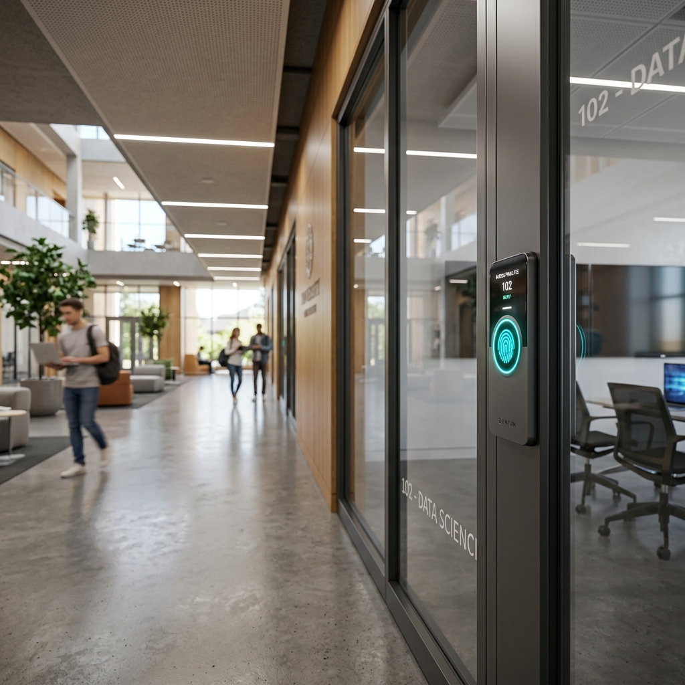
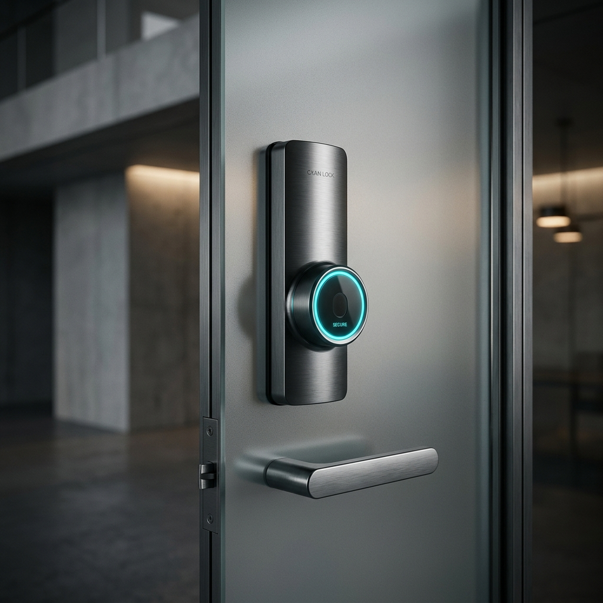

La sincronización perfecta entre el sistema de horarios académicos y las puertas físicas de tu campus. Entra al futuro.
Descubre cómo funciona
Nuestros nodos inteligentes se integran a la perfección con la arquitectura de tus aulas. Materiales premium, respuesta instantánea y conexión en tiempo real con el panel de administración central.

Las cerraduras consultan la base de datos académica y autorizan el acceso únicamente al profesor titular en su horario asignado.
Acceso seguro y sin llaves. Generación de códigos de un solo uso (OTP) sincronizados en tiempo real directamente al panel de control del docente autorizado.
Registros en tiempo real de cada apertura, cierre y solicitud de soporte. Todo controlado desde tu dashboard principal.
Olvida la logística de las llaves físicas. El acceso es instantáneo, ahorrando miles de horas académicas al semestre.
Los docentes pueden solicitar cambios de aula o espacios extra directamente desde su portal. Una vez que el administrador autoriza la solicitud, el sistema asigna el espacio y actualiza los permisos criptográficos de la cerradura en milisegundos.
La seguridad es prioritaria: los docentes solo pueden acceder estrictamente durante su horario asignado. La puerta se mantiene inquebrantable fuera de esa ventana, impidiendo el uso no autorizado de instalaciones fuera de los bloques de clase.
Nuestros nodos IoT inteligentes se instalan directamente en las puertas del campus, comunicándose en tiempo real con el servidor de carga académica para validar la apertura instantánea mediante códigos OTP y control de accesos.